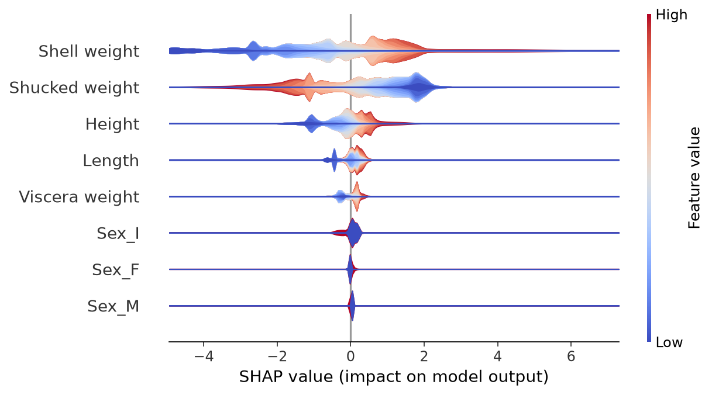
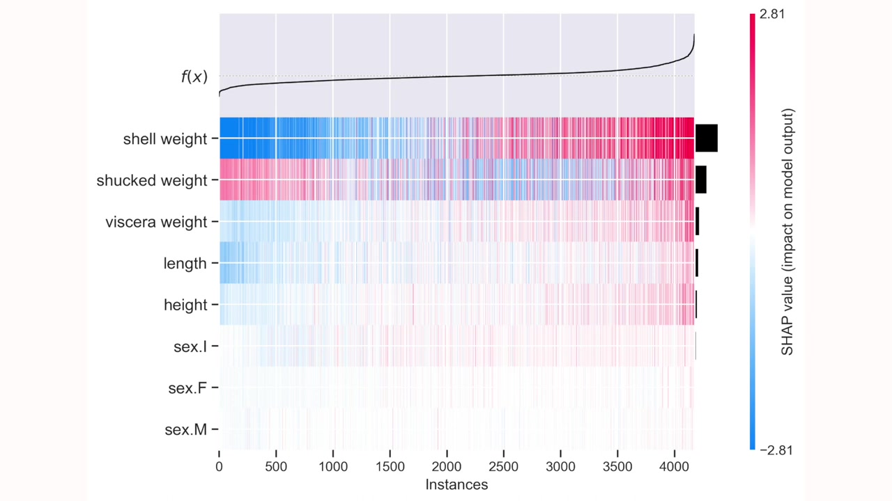

SHAP Violin Plots and Heatmaps
Companion to A Data Odyssey’s video · Conor O’Sullivan
The beeswarm showed the distribution of each feature’s contributions across a dataset, while the waterfall kept a single row’s explanation intact. Violin plots and heatmaps read the exact same table of numbers from two complementary angles: a violin smooths each feature column into a density outline, while a heatmap keeps all contributions from the same observation aligned in a single vertical stripe so cohorts of predictions can be compared side by side.
We reuse the Abalone ring-count explanations from Part 4 without retraining the model or changing the background population. What changes is how we slice and color the explanation matrix—and confusing the color scale of a violin with the color scale of a heatmap is one of the most common reading mistakes in applied SHAP reports.
One explanation matrix, four visual projections
Before reading either plot, write down the two matrices stored inside a shap.Explanation object for $n$ explained observations and $p$ features:
- $X \in \mathbb{R}^{n \times p}$: the raw feature matrix, where entry $x_{i,j}$ is the observed input value of feature $j$ on observation $i$ (for instance, shell weight in grams).
- $\Phi \in \mathbb{R}^{n \times p}$: the SHAP attribution matrix, where entry $\phi_{i,j}$ is the signed contribution of feature $j$ to observation $i$’s prediction (measured in predicted rings).
- $\phi_0 \in \mathbb{R}$: the shared baseline (expected model output over the reference dataset), and $f(x_i)$ is the model’s predicted ring count for row $i$.
Every row $i \in \{1,\dots,n\}$ satisfies local additive efficiency, so subtracting $\phi_0$ from both sides gives the baseline-centered prediction trace:
Consider a concrete miniature slice of $n = 4$ Abalone observations with baseline $\phi_0 = 9.90$ rings, tracking three top features plus the sum of the remaining five features:
| Observation | Shell weight $\phi_{i,1}$ ($x_{i,1}$) | Shucked weight $\phi_{i,2}$ | Diameter $\phi_{i,3}$ | Other 5 features | Centered sum $f(x_i)-\phi_0$ | Prediction $f(x_i)$ |
|---|---|---|---|---|---|---|
| Obs #14 | $-1.80$ ($0.07\text{ g}$) | $-0.40$ | $-0.30$ | $+0.10$ | $-2.40$ | $7.50$ |
| Obs #52 | $-1.50$ ($0.09\text{ g}$) | $+0.20$ | $-0.20$ | $-0.10$ | $-1.60$ | $8.30$ |
| Obs #89 | $+0.90$ ($0.26\text{ g}$) | $-0.50$ | $+0.30$ | $+0.10$ | $+0.80$ | $10.70$ |
| Obs #03 | $+2.60$ ($0.44\text{ g}$) | $-0.70$ | $+0.90$ | $+0.50$ | $+3.30$ | $13.20$ |
Notice what happens to Shucked weight ($\phi_{i,2}$) on Obs #03: a heavy overall shell pushes predicted age up ($+2.60$), while a disproportionately high meat weight (shucked weight) pulls predicted age down ($-0.70$) because younger, fast-growing abalone have heavier soft tissue relative to shell mass. A violin plot summarizes each column vertically across all rows, losing which row had both $+2.60$ and $-0.70$; a heatmap rotates the table so each observation stays intact as one vertical column.
| Plot type | Horizontal axis | Vertical axis | What color encodes | Row alignment |
|---|---|---|---|---|
| Waterfall | Cumulative output $\phi_0 \to f(x_i)$ | Features ranked by $|\phi_{i,j}|$ | Sign of $\phi_{i,j}$ (red $+$, blue $-$) | Single observation $i$ |
| Beeswarm | Signed attribution $\phi_{i,j}$ | Features ranked by $\frac{1}{n}\sum_i |\phi_{i,j}|$ | Raw feature value $x_{i,j}$ (high to low) | Lost across features |
| Layered Violin | Signed attribution $\phi_{i,j}$ | Features + kernel density width | Quantile layers of raw feature $x_{i,j}$ | Lost across features |
| Heatmap | Ordered observations $i = 1\dots n$ | Features + top trace $f(x_i)-\phi_0$ | Signed attribution $\phi_{i,j}$ (red $+$, blue $-$) | Preserved per column |
A violin shows where contributions concentrate
For a single feature $j$, place all $n$ attributions $\{\phi_{1,j}, \dots, \phi_{n,j}\}$ along a horizontal number line and fit a kernel density estimate (KDE). Where the violin outline is thick, many observations receive nearly the same attribution; where it tapers into a thin tail, only a handful of extreme rows reach that magnitude.
Separate horizontal spread from vertical thickness. A feature whose violin forms a tall, thick bulge tightly straddling zero contributes almost nothing to almost every row. Conversely, a feature with a thin but long right tail may barely move the average row while dominating the top 2% of predictions.
Setting plot_type="layered_violin" partitions the raw feature values $x_{\cdot,j}$ into quantile bins and stacks their smoothed densities from blue (low input value) to red (high input value):
shap.plots.violin(
explanation.values,
features=rows,
feature_names=list(rows.columns),
plot_type="layered_violin",
)

Inspect shell weight first: blue layers sit exclusively on the negative left side and red layers occupy the positive right tail, showing a clean monotonic relationship with predicted age. Now compare Shucked weight: high input values (red) concentrate on the left of zero, confirming the negative sign we saw on Obs #03 in our 4-row table.
Watch out for kernel-smoothing artifacts on discrete or binary columns such as Sex_I: even though an indicator only takes values $0$ or $1$ and often produces two tight clusters of SHAP values, Gaussian KDE bandwidth smoothing bridges the gap between them and extends soft tails slightly beyond the minimum and maximum observed attributions. When exact category boundaries matter, use grouped box plots (covered in Part 9).
A heatmap keeps each prediction in one column
In a SHAP heatmap, each vertical column corresponds to one explained row $i$ and each horizontal band corresponds to one feature $j$. Cell $(j, i)$ displays $\phi_{i,j}$ directly using a diverging color scale centered at zero (white near $0$, red for $\phi_{i,j} > 0$, blue for $\phi_{i,j} < 0$). Reading down a single column reconstructs that observation’s waterfall breakdown at a glance.


Two marginal summaries frame the matrix:
- Top trace $f(x)$: plots the centered sum $\sum_{j=1}^p \phi_{i,j} = f(x_i) - \phi_0$ around a dashed horizontal zero line representing $\phi_0$. When the curve crosses zero, predicted rings equal the baseline $\phi_0 \approx 9.90$—not zero rings.
- Right-hand bars: plot global mean absolute attribution $\bar{|\phi_j|} = \frac{1}{n}\sum_{i=1}^n |\phi_{i,j}|$, determining the top-to-bottom row order of the features.
Choose an ordering that matches the question
Because column order determines which observations appear as visual neighbors, changing instance_order changes the story the heatmap tells without altering a single number in $\Phi$:
- Default hierarchical clustering (explanation similarity):
shap.plots.heatmap(explanation)builds a distance matrix between rows of $\Phi$ and orders columns by leaf order of a dendrogram. Nearby columns share the same reason for their predictions (for example, large shell weight offset by large shucked weight), revealing distinct regimes or subpopulations. - Sorted by model output: ordering by $f(x_i)$ makes the top $f(x)$ trace monotonically non-decreasing from left to right. Because $\phi_0$ is constant across all rows, sorting by $\sum_{j=1}^p \phi_{i,j}$ produces the exact same permutation as sorting by $f(x_i)$.
- Sorted by a single raw feature: passing
instance_order=np.argsort(rows["Shell weight"].to_numpy())turns the horizontal axis into a monotonic sweep of shell weight, letting you read how every feature’s contribution evolves as shell weight grows.
predicted_rings = (
explanation.base_values + explanation.values.sum(axis=1)
)
shap.plots.heatmap(
explanation,
instance_order=np.argsort(predicted_rings),
max_display=8,
)Always state the chosen column ordering in your figure caption. Without it, a reader cannot tell whether a sharp color block represents a temporal shift, a clustering of explanation vectors, or high-prediction outliers.
Keep a route back to individual examples
A disciplined diagnostic workflow moves from global density to cohort stripes to individual rows:
- Use a layered violin to spot asymmetric tails, multimodal pockets, or unexpected color inversions (such as red high-shucked-weight values pulling ring predictions negative).
- Use a heatmap to check whether extreme attributions co-occur in the same observations (vertical stripes where two features reinforce or cancel each other).
- Extract the original row indices from
instance_orderand inspect a waterfall plot alongside the raw tabular measurements $x_i$ to verify physical plausibility.
The regression script generates our ordered Abalone heatmap directly from the held-out set, and the upstream violin and heatmap documentation list additional customization flags. Next, we move from continuous ring counts to classification, where tracking log-odds margins versus probabilities becomes critical.